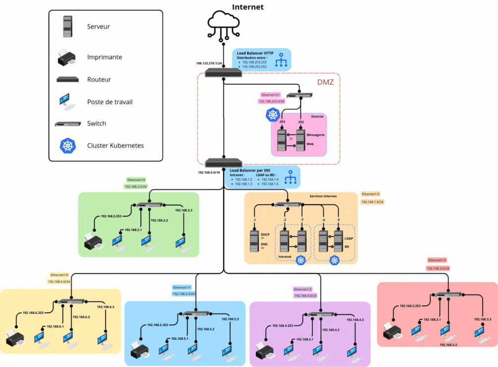

Portfolio d'apprentissage
Alternance de troisième année
Cours de S5
Compétence 3 : Administrer des systèmes informatiques communicants complexes
Niveau 3 : Faire évoluer et maintenir un système informatique communicant en conditions opérationnelles


Liste des apprentissages critiques
AC 1 Créer des processus de traitement automatisé (solution de gestion de configuration et de parc, intégration et déploiement continu…) [En cours d'acquisition]
Durant mes cours de troisième année, j'ai créé des processus de traitement automatisé sous Gitlab en TD d'automatisation de la chaîne de production.
AC 2 Configurer un serveur et des services réseaux de manière avancée (virtualisation…) [En cours d'acquisition]
En cours de cybersécurité, virtualisation avancée et installation et configuration de services j'ai été amenée à configurer un serveur et des services réseaux de manière sécurisée et avancée.
AC 3 Appliquer une politique de sécurité au niveau de l'infrastructure [En cours d'acquisition]
En arrivant en entreprise, et en lisant la charte de sécurité de la DSI, et en travaillant sur les TD de cyberséurité, j'ai appris à appliquer une politique de sécurité de l'infrastructure.
Liste des composantes essentielles
CE 1 En sécurisant le système d'information [En cours d'acquisition]
En cybersécurité et en continuité de service, j'ai appris les mesures à appliquer pour sécuriser son système d'information.
CE 4 En assurant la continuité d'activité [En cours d'acquisition]
Les cours de virtualisation et de continuité de service m'ont permise d'appréhender la gestion de crise, le maintien des activités et le retour à la normale.
Compétence 6 : Collaborer au sein d’une équipe informatique
Niveau 3 : Manager une équipe informatique
Liste des apprentissages critiques
AC 1 Organiser et partager une veille numérique [En cours d'acquisition]
Dans le cadre des cours de communication, j'ai effectuée une veille numérique autour de la réparabilité des équipements numérique, de l'open source, et de la cyberguerre.
AC 2 Identifier les enjeux de l'économie de l'innovation numérique [En cours d'acquisition]
J'ai assisté à un MOOC autour de l'impact écologique du numérique.
AC 3 Guider la conduite du changement informatique au sein d'une organisation [En cours d'acquisition]
Au cours de TD de deuxième et troisième année, j'ai étudiée la conduite du changement auprès de salariés de longue date ou auprès de chefs en ce qui concerne la sécurité du Système d'Information.
AC 4 Accompagner le management de projet informatique [En cours d'acquisition]
Je n'ai pas encore pu développer cet apprentissage critique.
Alternance : Migration de la librairie de sécurité de l'hyperviseur Actia .
Compétence 1 : Réaliser un développement d’application
Niveau 3 : Adapter des applications sur un ensemble de supports (embarqué, web, mobile, IoT…)
Liste des apprentissages critiques
AC 1 Choisir et implémenter les architectures adaptées [En cours d'acquisition]
J'ai implémenté le code d'une librairie de sécurité à jour au sein d'une architecture existante depuis 30 ans. J'ai factorisé le code qui pouvait être factorisé.
AC 2 Faire évoluer une application existante [En cours d'acquisition]
J'ai fais évoluer l'application de l'entreprise existante depuis 30 ans en mettant à jour la librairie.
AC 3 Intégrer des solutions dans un environnement de production [En cours d'acquisition]
Je n'ai pas encore intégrer mes modifications au sein du projet en production.
Liste des composantes essentielles
CE 1 En respectant les besoins décrits par le client [En cours d'acquisition]
J'ai respecté les besoins décrits par mon chef en respectant la mise en forme du code (notation hongroise) et en documentant mon code.
CE 2 En appliquant les principes algorithmiques [En cours d'acquisition]
En mettant à jour le chiffrement de l'application j'ai appliqué les principes algorithmiques tel que : créer des fonctions quand du code se répéte, récursivité, bien nommer ses variables.
CE 3 En veillant à la qualité du code et à sa documentation [En cours d'acquisition]
J'ai veillé à documenté mon travail au même titre que mes collaborateurs. (documentation confidentielle)
CE 4 En choisissant les ressources techniques appropriées [En cours d'acquisition]
En générant la librairie à jour, j'ai choisi les paramètres adaptés à l'application : multithread sous windows 32 bits.
>
Compétence 3 : Administrer des systèmes informatiques communicants complexes
Niveau 3 : Faire évoluer et maintenir un système informatique communicant en conditions opérationnelles
Liste des apprentissages critiques
AC 4 Déployer et maintenir un réseau d'organisation en fonction de ses besoins [En cours d'acquisition]
Je n'ai pas été amenée à déployer et maintenir un réseau d'organisation.
Liste des composantes essentielles
CE 2 En appliquant les normes en vigueur et les bonnes pratiques architecturales et de sécurité [En cours d'acquisition]
Au cours de la mise à jour de la librairie de sécurité j'ai appliqué les normes en termes de taille de clé de chiffrement et en bonnes pratiques architecturale car j'ai factorisé une partie de la base de code servant à chiffrer des fichiers.
CE 3 En offrant une qualité de service optimale [En cours d'acquisition]
En développant un script d'installation des services web de manière avancée j'ai fait en sorte que les services soient de qualité optimale.
Compétence 6 : Collaborer au sein d’une équipe informatique
Niveau 3 : Manager une équipe informatique
Liste des composantes essentielles
CE 1 En inscrivant sa démarche au sein d'une équipe pluridisciplinaire [En cours d'acquisition]
Au cours de mon stage de deuxième année, j'ai fais partie d'une équipe pluridisciplinaire en terme de recherche scientifiques mais aussi durant mon alternance : service RH, DSI, finances.
CE 2 En accompagnant la mise en œuvre des évolutions informatiques [En cours d'acquisition]
Je n'ai pas encore pu développer cette composante essentielle.
CE 3 En veillant au respect des contraintes juridiques [En cours d'acquisition]
Je n'ai pas encore pu développer cette composante essentielle.
CE 4 En développant une communication efficace et collaborative [En cours d'acquisition]
Au cours de mon alternance, j'ai développé une communication efficace et collaborative en faisant un point quotidien avec mon maître d'alternance, au cours de mon stage les comptes-rendus d'activité hebdomadaire m'ont aussi permis de développer cette composante essentielle.
Stage de deuxième année

Projet de recherche : Calculs statistiques et implémentation du cryptosystème de Paillier pour chiffrer des images
Compétence 1 : Réaliser un développement d’application
Niveau 2 : Partir des exigences et aller jusqu’à une application complète
Liste des apprentissages critiques
AC 1 Élaborer et implémenter les spécifications fonctionnelles et non fonctionnelles à partir des exigences [Acquis]
J'ai mis en place les spécifications fonctionnelle et non fonctionnelles en effecutant un diagramme de cas d'usage et rédigeant un document de suivi du développement.
AC 2 Appliquer des principes d’accessibilité et d’ergonomie [En cours d'acquisition]
Je n'ai pas été amenée à développer une interface graphique pour l'application.
AC 3 Adopter de bonnes pratiques de conception et de programmation [Acquis]
J'ai mis en application les principes SOLID pour développer et concevoir l'application. J'ai structuré l'application avec le modèle MVC afin d'ouvrir la possibilité d'une interface graphique à l'avenir.
AC 4 Vérifier et valider la qualité de l’application par les tests [En cours d'acquisition]
Je n'ai pas été amenée à développer des tests unitaires, en revanche, j'ai analysé les images chiffrées par l'application afin d'en tirer certaines mesures qui m'ont permises de déterminer si les images chiffrées étaient correctement chiffrées.
Liste des composantes essentielles
CE 1 En respectant les besoins décrits par le client [Acquis]
J'ai respecté les besoins décrits par mon chef en développant une application de chiffrement d'image par Paillier flexible, avec une documentation et un manuel d'utilisation.
CE 2 En appliquant les principes algorithmiques [Acquis]
J'ai mis en application de la récursivité à travers le calcul du PGCD.
CE 3 En veillant à la qualité du code et à sa documentation [Acquis]
J'ai veillé à la qualité du code en appliquant les principes vu en cours, et j'ai rédigé une documentation en anglais.
CE 4 En choisissant les ressources techniques appropriées [En cours d'acquisition]
J'ai choisi de développer l'application en C++, pour m'adapter aux bases de codes fourni, et le programme de calculs et de génération de courbes en Python pour sa librairie dédiée à la génération de courbes.
Compétence 2 : Optimiser des applications
Niveau 2 : Sélectionner les algorithmes adéquats pour répondre à un problème donné
Liste des apprentissages critiques
AC 1 Choisir des structures de données complexes adaptées au problème [Acquis]
J'ai appliqué les principes SOLID lors de chaque étapes du développement de l'application pour assurer la pérennité du projet. J'ai utilisé les classes avec de l'héritage, et j'ai mis en place un singleton.
AC 2 Utiliser des techniques algorithmiques adaptées pour des problèmes complexes (par ex. recherche opérationnelle, méthodes arborescentes, optimisation globale, intelligence artificielle…)[Acquis]
J'ai mis en application des algorithmes pour générer des nombres pseudo-aléatoire, obtenir les classes de congruence modulo n², calculer le PGCD et le plus petit diviseur commun. J'ai aussi développer un programme pour obtenir des mesures sur une images chiffrées.
AC 3 Comprendre les enjeux et moyens de sécurisation des données et du code [Acquis]
Cette expérience m'a permis de comprendre et d'assimilier les enjeux et la sécurisation des données, notamment d'images.
AC 4 Évaluer l’impact environnemental et sociétal des solutions proposées [En cours d'acquisition]
Cette expérience ne m'a pas permis de développer cet apprentissage critique.
Liste des composantes essentielles
CE 1 En formalisant et modélisant des situations complexes [Acquis]
J'ai modélisé les situations à travers des diagrammes de classe, de cas d'usage et d'état transition.
CE 2 En recensant les algorithmes et les structures de données usuels [Acquis]
J'ai mis en oeuvre des algorithmes, comme cité précédemment, dont le chiffrement AES.
CE 3 En s'appuyant sur des schémas de raisonnement [Acquis]
Avant de commencer le développement, j'ai lu et je me suis appuyée sur des articles scientifiques décrivant le cryptosystème de Paillier. Ensuite, j'ai appliqué les calculs sur papier afin de comprendre les différentes étapes.
s
CE 4 En justifiant les choix et validant les résultats [Acquis]
J'ai validé les résultats des calculs statistiques et des courbes au cours des réunions hebdomadaire avec mon chef, en même temps j'ai pu justifié mes choix d'architecture.
Compétence 3 : Administrer des systèmes informatiques communicants complexes
Niveau 2 : Déployer des services dans une architecture réseau
Liste des apprentissages critiques
AC 1 Concevoir et développer des applications communicantes [En cours d'acquisition]
Cette expérience ne m'a pas permis de développer cet apprentissage critique.
AC 2 Utiliser des serveurs et des services réseaux virtualisés [En cours d'acquisition]
Cette expérience ne m'a pas permis de développer cet apprentissage critique.
AC 3 Sécuriser les services et données d’un système [En cours d'acquisition]
Cette expérience ne m'a pas permis de développer cet apprentissage critique.
Liste des composantes essentielles
CE 1 En sécurisant le système d'information [En cours d'acquisition]
Cette expérience ne m'a pas permis de développer cette composante essentielle.
CE 2 En appliquant les normes en vigueur et les bonnes pratiques architecturales et de sécurité [En cours d'acquisition]
Cette expérience ne m'a pas permis de développer cette composante essentielle.
CE 3 En offrant une qualité de service optimale [En cours d'acquisition]
Cette expérience ne m'a pas permis de développer cette composante essentielle.
CE 4 En assurant la continuité d'activité [En cours d'acquisition]
Cette expérience ne m'a pas permis de développer cette composante essentielle.
Compétence 6 : Collaborer au sein d’une équipe informatique
Niveau 2 : Situer son rôle et ses missions au sein d’une équipe informatique
Liste des apprentissages critiques
AC 1 Comprendre la diversité, la structure et la dimension de l’informatique dans une organisation (ESN, DSI, …) [Acquis]
En effectuant un organigramme de l'université, j'ai pu comprendre la structure et la dimension informatique de mon lieu de stage.
AC 2 Appliquer une démarche pour intégrer une équipe informatique au sein d’une organisation [Acquis]
Je me suis intégré au sein de l'équipe de recherche en déjeunant avec l'équipe, apportant des croissants et pain au chocolat et participant aux événements qui ont eu lieu durant mon stage.
AC 3 Mobiliser les compétences interpersonnelles pour intégrer une équipe informatique [Acquis]
Je me suis intégré à l'équipe en mettant en œuvre ma curiosité et mon empathie.
AC 4 Rendre compte de son activité professionnelle [Maîtrise]
Je rédigeais chaque semaine, le vendredi après-midi, un compte-rendu d'activité résumant les travaux prévu pour la semaine, le travail effectué, le travail en cours et les travaux prévu pour la suite, en citant mes sources et montrant les résultats obtenu.
Liste des composantes essentielles
CE 1 En inscrivant sa démarche au sein d'une équipe pluridisciplinaire [Acquis]
J'ai pu collaborer avec un étudiant de dernière année de master en programmation graphique et j'ai pu collaborer avec mon chef plutôt spécialisé sur l'aspect recherche de l'informatique.
CE 2 En accompagnant la mise en œuvre des évolutions informatiques [Acquis]
J'ai effectué des recherches sur la manière d'appliquer le cryptosystème de Paillier et sur l'existant.
CE 3 En veillant au respect des contraintes juridiques [Acquis]
J'ai mis en application la science ouverte de l'unversité en laissant l'application en open-source.
CE 4 En développant une communication efficace et collaborative [Acquis]
Les échanges quotidien avec mes collaborateurs ont été bénéfique au projet.
Saé S3 & S4
SecureWin : Application d'enchères sécurisée à pli fermé.
Compétence 1 : Réaliser un développement d’application
Partir des exigences et aller jusqu’à une application complète.
Liste des apprentissages critiques :
AC 1 Élaborer et implémenter les spécifications fonctionnelles et non fonctionnelles à partir des exigences [Acquis]
Chaque sprint débutait par une phase d'analyse à partir des nouvelles exigences, qui consistait en l'élaboration du diagramme de cas d'usages, qui met en avant les besoins non fonctionnels, et des spécifications supplémentaires, qui prennent en compte des spécifications fonctionnelles.
AC 2 Appliquer des principes d'accessibilité et d'ergonomie [En cours d'acquisition]
En intégrant une interface graphique, nous avons élaboré une interface ergonomique
et accessible de par sa simplicité.
AC 3 Adopter de bonnes pratiques de conception et de programmation [Acquis]
Nous avons intégré durant la conception et la programmation les principes SOLID et les design patterns
que nous avons vus en cours de qualité de développement. Particulièrement lors du semestre 4, nous avons restructuré certaines parties du code.
AC 4 Vérifier et valider la qualité de l'application par les tests [En cours d'acquisition]
Des tests ont été rédigé lors de l'implémentation de nouvelles fonctionnalités. Tel que la signature et sa persistance.
Liste des composantes essentielles :
CE 1 En respectant les besoins décrits par le client [Maîtrise]
Un product backlog servait à répertorier les besoins du client, il était alimenté lors de chaque réunion effectuée avec le client.
CE 2 En appliquant les principes algorithmiques [En cours d'acquisition]
Lors du semestre 4, nous avons implémenté un nouvel algorithme de chiffrement homomorphe exigé et décrit par le client.
CE 3 En veillant à la qualité du code et à sa documentation [Acquis]
La qualité du code était surveillé avec des commits réguliers, une documentation a été réalisée grace à une javadoc.
CE 4 En choisissant les ressources techniques appropriées [En cours d'acquisition]
Nous avons opté pour un développement avec une version de java permettant l'utilisation de javafx
pour l'interface graphique et l'utilisaiton de keytool pour la génération de signatures.
Compétence 2 : Optimiser des applications
Partir des exigences et aller jusqu’à une application complète.
Liste des apprentissages critiques :
AC 1 Choisir des structures de données complexes adaptées au problème [Acquis]
Nous avons mis en place des structures de données complexes pour
transférer des enchères, des offres, des résultats d'enchères etc.
AC 2 Utiliser des techniques algorithmiques adaptées pour
des problèmes complexes [En cours d'acquisition]
Durant le semestre 3 nous avons utilisé des algorithmes de chiffrement en combinant RSA et AES,
pour la signature et le chiffrement des prix. Lors du semestre 4 nous avons implémenté un algorithme de chiffrement homomorphe pour chiffrer les prix.
AC 3 Comprendre les enjeux et moyens de sécurisation des données et du code [Acquis]
Nous avons compris les enjeux de la sécurisation des données et du code en appliquant du chiffrement et mettant en place des protocoles contre un attaquant potentiel.
AC 4 Évaluer l'impact environnemental et sociétal des solutions proposées [En cours d'acquisition]
Nous avons pris en compte l'impact environnemental de ces applications, c'est pourquoi elles n'imposent pas l'utilisation d'une base de données.
De plus, le déploiement des applications sur Docker permet une virtualisation qui assure une diminution de la quantité d'énergie consommée.
Liste des composantes essentielles :
CE 1 En formalisant et modélisant des situations complexes [Acquis]
Les situations complexes ont été prises en compte au travers de la rédaction du scénario nominal et des scénarios alternatifs.
CE 2 En recensant les algorithmes et les structures de données usuels [En cours d'acquisition]
Nous avons rencensé ces algorithmes et structures de données dans un document de spécifications supplémentaires.
CE 3 En s'appuyant sur des schémas de raisonnement [En cours d'acquisition]
Nous nous sommes appuyés sur des schémas de raisonnement donné par le client dans sa note d'intention et nous l'avons alimenté au cours du développement.
CE 4 En justifiant les choix et validant les résultats [Maitrise]
Nous avons justifié nos choix à chaque revues de sprint, et avec une démonstration des applications au client qui a validé ou non nos choix.
Compétence 3 : Administrer des systèmes informatiques communicants complexes
Partir des exigences et aller jusqu’à une application complète.
Liste des apprentissages critiques :
AC 1 Concevoir et développer des applications communicantes [Acquis]
Nous avons conçu et développé trois applications communicantes, au travers de l'utilisation socket sécurisés (SSL).
AC 2 Utiliser des serveurs et des services réseaux virtualisés [En cours d'acquisition]
Durant le semestre 4, nous avons utilisé Docker pour déployer et virtualiser nos trois applications.
AC 3 Sécuriser les services et données d'un système [Acquis]
Les services de nos trois applications sont sécurisées au travers du chiffrement, des signatures,
du certificat SSL permettant la communication sécurisée et des tests.
Liste des composantes essentielles :
CE 1 En sécurisant le système d'information [Acquis]
Le SI a été sécurisé au travers de nombreux services : chiffrement, signature, certificat ssl et des tests.
CE 2 En appliquant les normes en vigueur et les bonnes pratiques architecturales et de sécurité [Maitrise]
Nous avons appliqué les principes SOLID et design patterns assurant les bonnes pratiques du code et de sécurité.
CE 3 En offrant une qualité de service optimale [En cours d'acquisition]
A travers nos tests nous avons pu offrir une qualité de service optimale grace à nos trois applications.
CE 4 En assurant la continuité d'activité [Acquis]
Nous avons assuré une continuité d'activité avec la méthodologie agile SCRUM.
Compétence 4 : Gérer des données de l’information
Partir des exigences et aller jusqu’à une application complète.
Liste des apprentissages critiques :
AC 1 Optimiser les modèles de données de l'entreprise [Acquis]
Dans le cas d'une utilisation en entreprise, notre application est optimisé grace à une application destinée aux entreprises et deux applications destinées aux clients.
AC 2 Assurer la confidentialité des données (intégrité et sécurité) [Acquis]
La confidentialité des données est assurée grace au chiffrement et au fait qu'aucune données n'est collectée.
AC 3 Organiser la restitution de données à travers la programmation et la visualisation [Acquis]
Nous avons organisé nos données en visualisant nos diagrammes de conception.
AC 4 Manipuler des données hétérogènes [Acquis]
Nous avons manipulé des données hétérogènes tels que : le prix d'un participant, une enchère (sujet, description, date), des chiffrés, des signatures...
Liste des composantes essentielles :
CE 1 En respectant les réglementations sur le respect de la vie privée et la protection des données personnelles [Acquis]
Le respect de la vie privée et la protection des données personnelles
sont assurées de par les fonctionnalités de sécurisation qui ont été implémentées (chiffrement, signatures, certificat SSL).
CE 2 En respectant les enjeux économiques, sociétaux et écologiques de l'utilisation du stockage de données,
ainsi que les différentes infrastructures (data centers, cloud, etc.) [NA]
CE 3 En s'appuyant sur des bases mathématiques [Acquis]
Durant le semestre 4, nous nous sommes appuyés sur des bases mathématiques pour implémenter un nouvel algorithme de chiffrement homomorphe.
CE 4 En assurant la cohérence et la qualité [Acquis]
Nous avons assuré la cohérnece et la qualité au travers des tests unitaires.
Compétence 5 : Conduire un projet
Partir des exigences et aller jusqu’à une application complète.
Liste des apprentissages critiques :
AC 1 Identifier les processus présents dans une organisation
en vue d'améliorer les systèmes d'information [NA]
AC 2 Formaliser les besoins du client et de l'utilisateur [Maitrise]
Nous avons formaliser les besoins avec le product backlog et une
to do list, qui ont été alimentés à chaque réunions et début de sprint.
AC 3 Identifier les critères de faisabilité d'un projet informatique [Maitrise]
Lors de chaque réunions avec le client, nous ne nous engagions pas tant qu'il n'y avait pas eu d'échanges
autour des nouvelles exigences avec l'équipe de développement. Cela permettait d'identifier en équipe la faisabilité des besoins
du client en fonction de nos compétences et de nos moyens.
AC 4 Définir et mettre en œuvre une démarche de suivi de projet [Maitrise]
Nous avons mis en œuvre un suivi de projet avec : un product backlog,
une to do list, des comptes rendus de réunion, des documents d'analyse et de conception,
et des documents de bilan de fin de sprint.
Liste des composantes essentielles :
CE 1 En communiquant efficacement avec les différents acteurs d'un projet [Maitrise]
La communication était assurée entre les membres de l'équipe de développement grâce à un serveur de l'application Discord.
La communication avec le client était assurée avec des envois de mails.
CE 2 En respectant les règles juridiques et les normes en vigueur [Acquis]
Nous avons respecté les règles juridiques et normes tels que le RGPD, et le paysage juridique des enchères.
En notant nos recherches dans le documents de spécifications supplémentaires.
CE 3 En sensibilisant à une gestion éthique, responsable, durable et interculturelle [NA]
CE 4 En adoptant une démarche proactive, créative et critique [En cours d'acquisition]
Nous avons adopté une démarche critque au travers des bilans de fin de sprint afin de nous améliorer.
Compétence 6 : Collaborer au sein d’une équipe informatique
Partir des exigences et aller jusqu’à une application complète.
Liste des apprentissages critiques :
AC 1 Comprendre la diversité, la structure et la dimension de l'informatique dans une organisation (ESN, DSI, …) [NA]
AC 2 Appliquer une démarche pour intégrer une équipe informatique au sein d'une organisation [Maitrise]
Des réunions régulières (stand up meeting) ont été mises en place non seulement pour assurer le suivi du projet
mais aussi pour s'intéresser à chaque membre de l'équipe de développement et assurer l'intégration de chacun.
AC 3 Mobiliser les compétences interpersonnelles pour intégrer une équipe informatique [Maitrise]
J'ai mobiliser mon empathie, mon esprit d'équipe et ma curiosité pour intégrer cette nouvelle équipe de développement.
AC 4 Rendre compte de son activité professionnelle [Maitrise]
J'ai rendu compte de mon activité professionnelle à chaque réunions d'équipe (stand up meeting), à chaque commits sur git, et sur notre serveur Discord.
Liste des composantes essentielles :
CE 1 En inscrivant sa démarche au sein d'une équipe pluridisciplinaire [Maitrise]
Nous avons sollicité chaque membres de l'équipe de développement à travers leurs compétences.
CE 2 En accompagnant la mise en œuvre des évolutions informatiques [NA]
CE 3 En veillant au respect des contraintes juridiques [Acquis]
Nous avons spécifié nos contraintes juridiques liées aux enchères dans notre document de spécifications supplémentaires.
CE 4 En développant une communication efficace et collaborative [Acquis]
Nous avons développé une communication efficace et collaborative grace aux outils tels que Discord et gitlab, mais aussi grace aux réunion régulières (stand up meeting).
.png)
Pluche
Compétence 1 : Réaliser un développement d’application
Partir des exigences et aller jusqu’à une application complète.
Liste des apprentissages critiques :
AC 11.02 Élaborer et implémenter les spécifications fonctionnelles et non fonctionnelles à partir des exigences [Acquis]
Nous avons pris en compte des exigences à travers un tableau des exigences.
AC 2 Appliquer des principes d'accessibilité et d'ergonomie [En cours d'acquisition]
Le site web a été développé en prenant en compte l'accès au site sur téléphone. (il est responsif)
AC 3 Adopter de bonnes pratiques de conception et de programmation [Maitrise]
Nous avons effectué des commits réguliers et précis.
Liste des composantes essentielles :
CE 1 En respectant les besoins décrits par le client [Maitrise]
Nous avons respecté les besoins décrits avec un tableau des exigences pour suivre le projet.
CE 2 En appliquant les principes algorithmiques [Acquis]
Nous avons appliqué des principes algorithmiques pour traiter nos requêtes.
CE 3 En veillant à la qualité du code et à sa documentation [NA]
CE 4 En choisissant les ressources techniques appropriées [Acquis]
Nous avons utilisé une base de données mariaDB et des langages tels que HTML/CSS, JavaScript et PHP.
Compétence 2 : Optimiser des applications
Partir des exigences et aller jusqu’à une application complète.
Liste des apprentissages critiques :
AC 3 Comprendre les enjeux et moyens de sécurisation des données et du code [Acquis]
Nous avons mis en place des sécurités contre les attaques XSS, des injections SQL, et des attaques courantes de site web.
Liste des composantes essentielles :
CE 1 En formalisant et modélisant des situations complexes [En cours d'acquisition]
Nous avons intégré des scénarios alternatifs en cas d'utilisation d'un email déjà utilisé ect.
CE 2 En recensant les algorithmes et les structures de données
usuels [Acquis]
Nous avons utilisé MD5 pour haché les mots de passes.
CE 3 En s'appuyant sur des schémas de raisonnement [En cours d'acquisition]
Nous nous sommes appuyés sur des schémas des raisonnement, notamment pour chaques étapes de l'achat d'un produit.
CE 4 En justifiant les choix et validant les résultats [Maitrise]
Nous avons validé nos résultats en testant notre site web.
Compétence 3 : Administrer des systèmes informatiques communicants complexes
Partir des exigences et aller jusqu’à une application complète.
Liste des apprentissages critiques :
AC 3 Sécuriser les services et données d'un système [Acquis]
Nous avons sécurisé nos services et nos données avec du hachage de mots de passe.
Liste des composantes essentielles :
CE 1 En sécurisant le système d'information [Acquis]
Nous avons sécurisé le SI des attaques courantes d'un site web.
CE 2 En appliquant les normes en vigueur et les bonnes pratiques architecturales et de sécurité [Acquis]
Nous avons appliqué les bonnes pratiques architecturales et de sécurité avec l'architecture MVC et un htaccess, une interdiction d'accès à des pages sensibles.
CE 3 En offrant une qualité de service optimale [Acquis]
Nous offrons une qualité de service optimale en appliquant nos compétences.
CE 4 En assurant la continuité d'activité [Acquis]
Nous avons assuré la continuité d'activité grace à gitlab.
Compétence 4 : Gérer des données de l’information
Partir des exigences et aller jusqu’à une application complète.
Liste des apprentissages critiques :
AC 3 Organiser la restitution de données à travers la program-
mation et la visualisation [En cours d'acquisition]
Grace à notre IDE phpstorms et phpmyadmin nous pouvions visualiser nos données et notre programme de manière gloable.
AC 4 Manipuler des données hétérogènes [En cours d'acquisition]
Nous avons manipuler des données hétérogènes avec nos comptes utilisateurs, nos produits, nos achats qui contenait une variété de données.
Liste des composantes essentielles :
CE 1 En respectant les réglementations sur le respect de la vie
privée et la protection des données personnelles [Acquis]
Nous avons respecté les réglementations sur le respect de la vie privée et la protection
des données personnelles en sécurisant le site web, hachant les données sensibles, et collectant les données uniquement nécessaire.
CE 2 En respectant les enjeux économiques, sociétaux et écologiques de l'utilisation du stockage de données, ainsi
que les différentes infrastructures (data centers, cloud, etc.) [Acquis]
Nous avons récollecté uniquement les données nécessaires à l'achat d'un article sur un site de ecommerce.
CE 3 En s'appuyant sur des bases mathématiques [Acquis]
Nous nous sommes appuyé sur les bases mathématiques dans le calcul du prix total d'un panier.
CE 4 En assurant la cohérence et la qualité [Acquis]
Nous nous sommes assuré de la cohérence et de la qualité à travers nos commits réguliers, et une communication régulière.